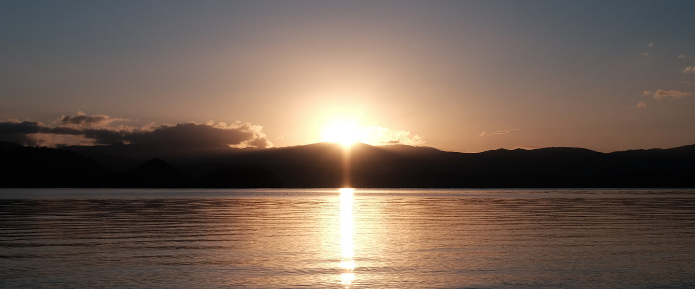
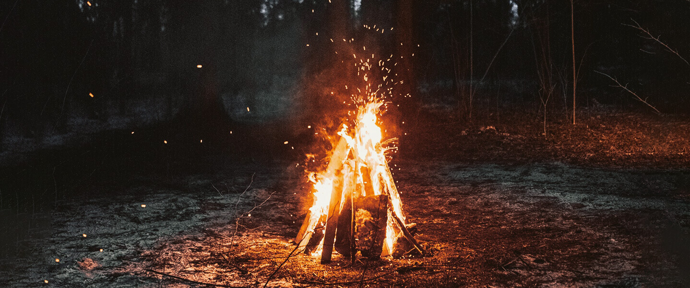
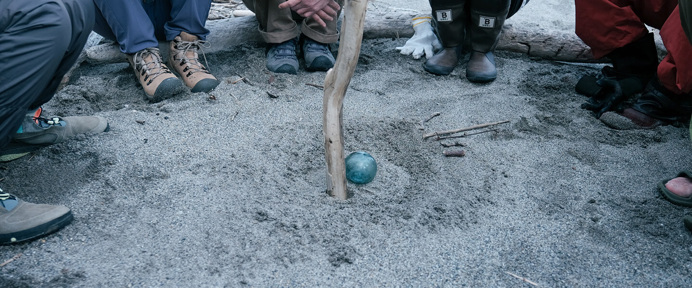
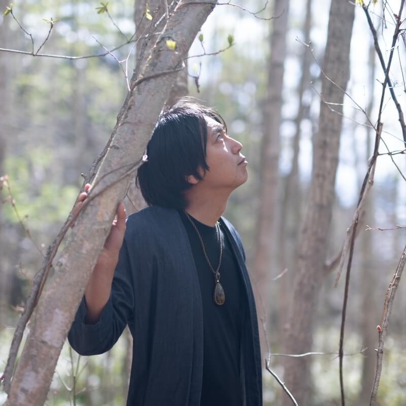

大いなる流れと共に
2023.5.3(wed) 14:00 - 5.6(sat) 15:30 ｜
Hokkaido Toya
scroll
太古から流れる一筋の風に触れ
自然のリズムと調和した時、
呼び起こされる私自身の記憶。
空に抱かれ、大地に包まれる私。
太陽が見せてくれるこの世界の広大さ。月が照らしてくれる私自身の影。
大自然がもたらす、全ての命と共に私がある、という事実。
命の声に耳を傾け、記憶の彼方から続く一筋の光を、呼び起こす森の中での3泊4日。
内なる世界への案内人が、森を舞台にインナージャーニーへと誘います。
木は、なんと語りかけてくるのか。
風は、どこへ誘おうとしてるのか。
火は、何を呼び覚ますのか。
水は、何を伝えてくるのか。
普段生きている上で、閉じている感覚が開き、意識の範囲を拡張します。
私・あなた・世界。すべての巡りの中心に位置する、私という命。
その声に耳を澄まし、私という光が灯る場所を思い出す。そして、その光が照らす先へ。
私が何であったか、何者であったか。
世界とは、何だったか。
大自然を舞台に、共に内なる世界へ。
時間と共に深まる体験
-
時を外した時間
時計・電子機器を預け、
太陽と月の時間に身を委ね命のリズムを呼び起こします。 -
自然との対話
食事・焚き火・レクレーションを通して自然との対話を行います。
空と大地に包まれた時間で、奥底に眠る声に耳をすまします。 -
私自身との対話
ヒプノセラピー、内観ワークを通じて未来の記憶を呼び覚まします。
私は、どこからきたのか・どこへ向かうのか。
リトリート詳細
- 日程
- 2023年5月3日(水) 14時 〜 5月6日(土) 15時半(4泊5日)
- 集合/解散場所
- JR洞爺駅 (新千歳空港より車で約2時間、特急電車で約1時間半) 電車でお越しの方は集合時は14:08着、解散時は15:30発をご予定ください。車での送迎をいたします。
- 参加費
- ¥120,000
｜特別価格 ¥88,000(3/31まで) 表記価格は税込です。
- お申し込み締切
- 4/16(日)
- 定員
- 8名
- 時間の流れ
- 1日目【静寂への入り口】
14:00 集合・ビレッジへ移動
14:30 ビレッジ到着、小屋で荷物を置く
15:30 フィールド散歩・テントサウナ・水風呂
17:00 Welcome BBQ
20:00 焚き火
21:30 森へ
22:00 森で就寝 - 2日目【時のない太陽】
7:30 起床・瞑想
8:30 朝食
10:30 午前のワーク・五感を開く
13:00 昼食
13:30 午後のワーク・自然の声
17:30 晩御飯
19:00 夜のワーク・闇夜の声
20:00 焚き火 - 3日目【ヴィジョンに触れる】
7:30 起床・瞑想
8:30 朝食
10:30 午前のワーク・私の声
13:00 昼食
13:30 午後のワーク・未来の声
17:30 晩御飯
19:00 焚き火
22:00 ナイトウォーク
22:30 就寝 - 4日目【世界に包まれる】
6:30 起床
7:30 軽食
8:00 お風呂へ
11:00 ブランチ
12:30 チェックアウト
15:30 洞爺駅にて解散
- 含まれるもの
- 期間中の食事、温泉利用料金、移動費、キャンプ用品、写真・動画撮影
キャンプ用品は、テントや十分に温かい寝袋、マット、ライトなど、必要な器材の全てをこちらでご用意します。
全日程カメラマンが同行し、期間中の写真撮影、終了後の振り返り動画をご提供します。
- 持ち物
- 水筒、着替え、防寒着、雨靴、バスタオル、歯ブラシ 東京での冬に近い環境です。ダウンやフリース、ヒートテックなどを必ずご持参ください。
前泊または後泊する場合の追加料金は、1泊¥8,800(テント・寝袋、夜と朝の食事付き)です。
全編を通して、携帯電話やパソコンの利用ができません。緊急時の連絡先としてスタッフの連絡先をお伝えします。
メンバー
-

宇野 豪佑Hypno therapist
内的世界への案内人
Blue Villageの発起人。20代から人と自然が調和する暮らしの在り方やネイティブ・アメリカンやペルーのシャーマンが持つ、古代からの叡智の探求を続けている。北海道・洞爺湖畔の森に水が湧く土地との出会いをきっかけに、学んだ叡智を暮らしの中で実践する場としてBlue Villageを創り始める。シャーマニックな技法のひとつとして、ヒプノセラピーを学び資格を取得し、『内的世界への案内人』として【インナージャーニー旅行会社】を主宰し、インナージャーニープログラムの企画やセッションを行っている。
歌を歌い、言葉を綴り、絵を描く。様々な感覚を使って現れる彼の表現は、たくさんの人を目覚めさせる。そうして見つけた誰かの光を、暖かい眼差しで導き、新しい世界を見せてくれている。 -

中村 峻介Artist
目に見えない世界を彩り続ける
ペルーでのシャーマンのセレモニー、スウェーデンでのネイティブアメリカンの通過儀礼等の経験などを通し、深層心理、量子論、天文学、民俗学などに関心をもち、探求を続ける。それらを基に、時間や空間を超えるもの、意識と無意識、見えるものと見えざるものの『境界線』という、自己と他者を縁取るものや、世界で生じている曖昧かつ不可視な事象について、抽象絵画やワークショップ等といった多様なメディアを通して、アプローチをし続けている。また、豪佑と【インナージャーニー旅行会社】を共同主宰し、ヒプノセッションでたどり着いた無意識化でのビジョンを、目に見える絵という形で描いている。
誰かの内側の光を繊細に捉えて絵に描くことで、その人自身も気づいていない、その人の本来の光を見つけてくれる。彼の優しく繊細な感覚は、多くの人を惹きつけ、癒し続けている。 -

うのかなCosmic food creator
宇宙から微生物まで、「つながる」食の体験を。
東京から洞爺湖へ移住し、日々子育てと畑をしながら、Farm to Tableを楽しんでいる。そして、これまで感じていた「食べることで、過去や未来、他のいのちとつながる感覚」を、インスタレーションを通して体験する場を開いたり、YouTube【湖はんの森ぐらし。】では、BlueVillageでの暮らしや世界観を発信。主宰するオンラインサロン【湖はんの森の薬膳salon】では、薬膳をベースとした食の研究成果のレシピをオンラインレッスンで共有したり、知識を深めている。
彼女の作り出す世界観と、魔法のように生み出される豊かな食卓は、BlueVillageのメンバーはもちろん、ここを訪れる人たちを虜にし続けてる。 -

むらかみ よしみPhotographer/Designer
50年後、100年後もあってほしいと願う、想いをカタチに。
大学卒業後にアパレル販売員として働いていたが「本当にやりたい仕事とは？」という疑問を持ち、専門学校を経てクリエイターに転身。フリーランスとしてデザインを中心に、ディレクション、撮影など多方面で、様々なプロジェクトに関わる。BlueVillageではカメラを片手に、ここで起こるいろいろな事象を写真や動画として切り取り続けている。また、湧き上がるメンバーたちの想いを、ロゴやサイト、その他メディアなどのカタチにし、発信するサポートもしている。
彼女は世界の美しさを発見する目を持ち、そのまま収穫できる技術と、一度強く信じたらまっすぐ突き進む強さがある。たくさんの人の伴走者として、独特なクリエイターとして、今日も力強く走り続けている。